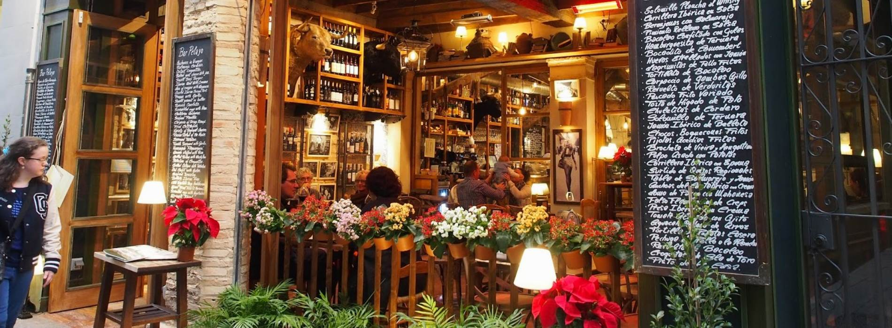
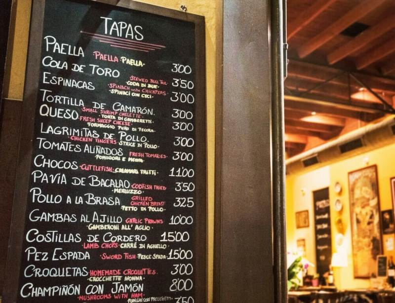
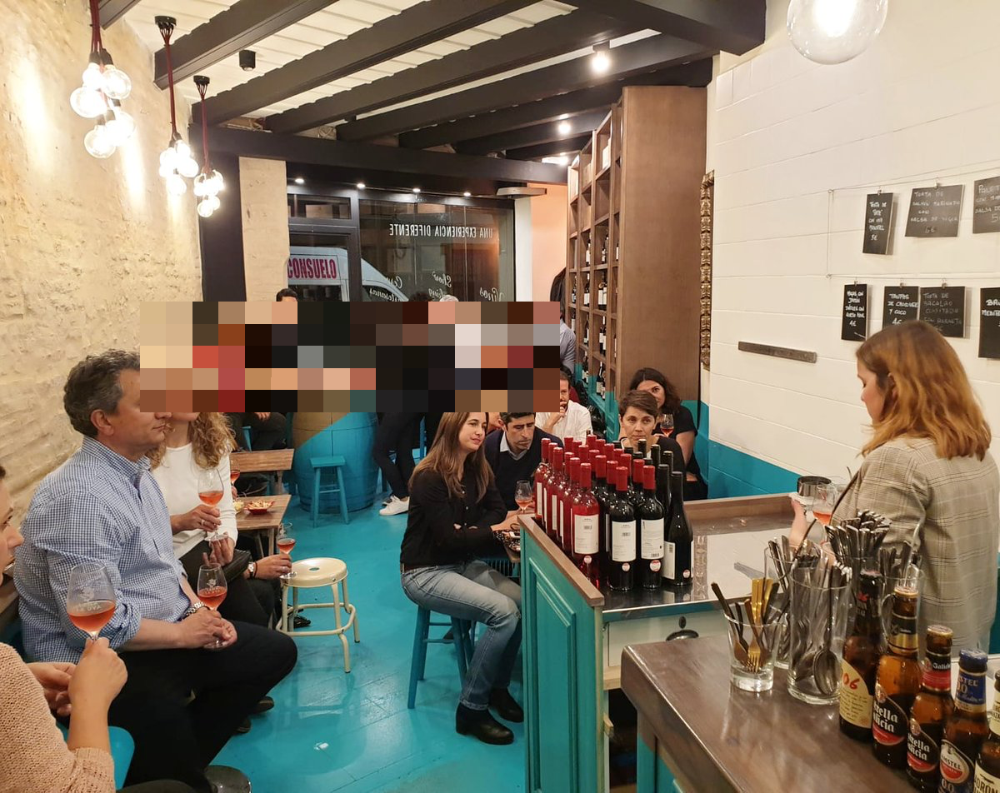
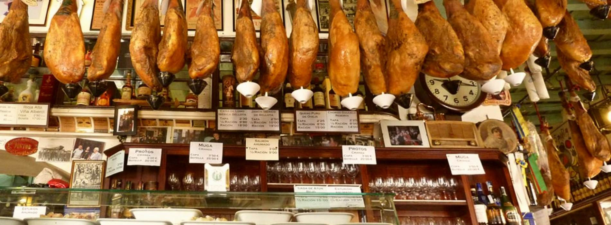
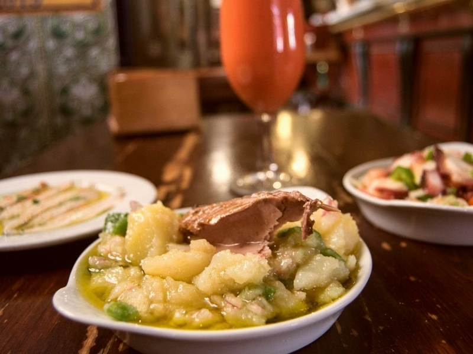
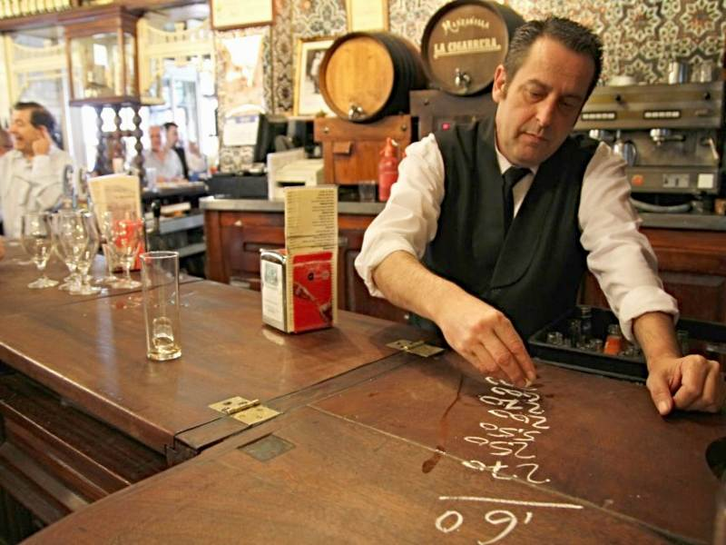
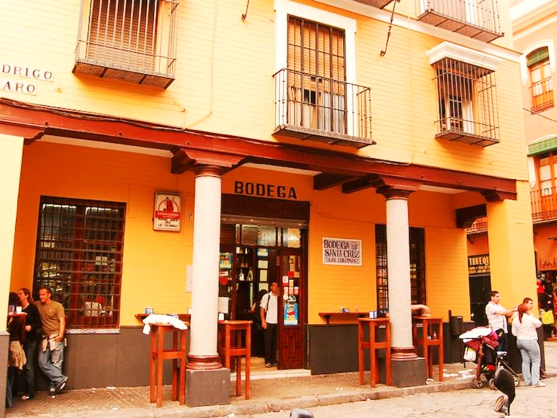
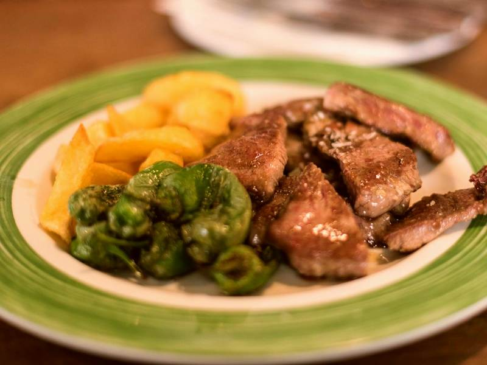
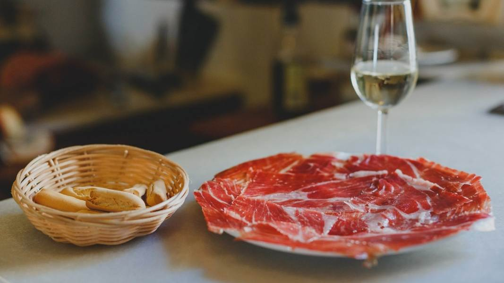
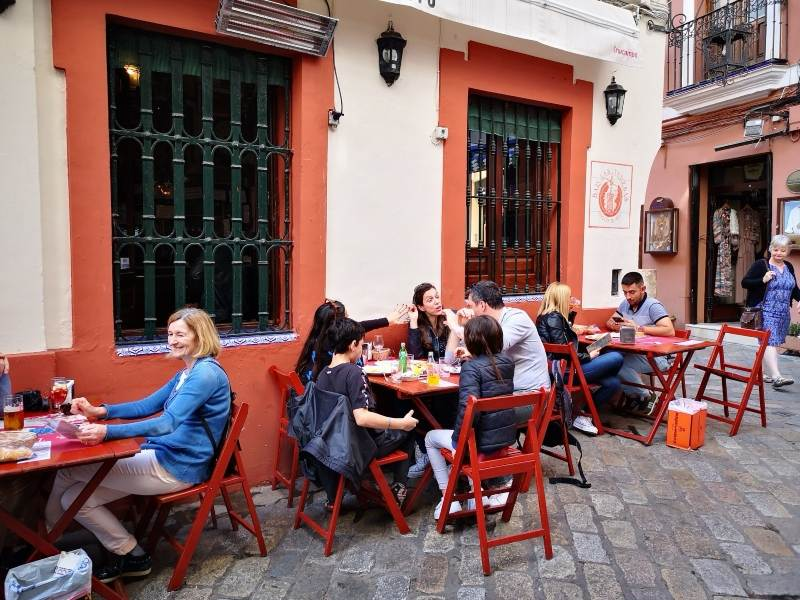

Private Tapas Tour · Seville
Private Tapas Tour in Seville
An evening through the tabernas
No prepayment · a personal reply from Gunvor within 24 hours

Your guide
This tour is guided by me, Gunvor Guttormsen — Norwegian, in Seville for over 30 years and an officially licensed guide. You write to me directly, and I answer you myself. More about me
Your guide
This experience is in the hands of one of our trusted partner guides — licensed, local and chosen by me personally, people I have worked with for years and would send my own family to. I plan the day with you and stay your contact throughout. More about how we work
The experience
Tapas the way Seville eats them
In Seville, tapas are not a menu. They are the reason people leave the house.
We walk from taberna to taberna, one or two dishes in each, standing at the bar the way locals do. No set menu and no fixed route — I choose the places on the day, depending on what is good and how busy the city is.
Along the way you taste hand-cut Iberian ham, cheeses from the mountains, sherry from Jerez and Andalusian wines, and the dishes each bar has made its name on. Some of the bars we visit have been in the same family for over a century.
Between stops we walk through the old quarters — Santa Cruz, El Arenal, the streets around the Salvador — and the food gives the history somewhere to hold on to. You learn why the tortillita de camarones exists, what the Moors left behind in the kitchen, and where the sevillanos actually go on a Thursday night.
The tour is private, so it moves at your pace. If you would rather sit down and eat properly at the last stop, or want it built around wine rather than food, tell me and I plan it that way.


The route
How the evening goes
{{ s.label }}
{{ s.title }}
{{ s.text }}
What is included
- —{{ i }}
Photo gallery
An evening in the tabernas








Reviews
{{ r.text }}
Where we meet
Central Seville, agreed with you
We usually meet in the old centre, a few minutes on foot from the cathedral, and start in the early evening. You receive the exact meeting point when your booking is confirmed, and we can start from your hotel if that suits you better.
Frequently asked questions
{{ f.q }}+
{{ f.a }}
Enquire about this tour
Shall we save an evening for you?
Tell me your dates, how many you are and what you like to eat and drink. I answer personally within 24 hours with availability and the exact price — nothing is booked and nothing is paid until you say yes.
You may also like
More Seville food experiences
Ready when you are
Let us plan your evening in the tabernas
Tell us your dates, the size of your party and anything you would rather not eat. We take care of the rest.
Check availability{{ lbAlt }}